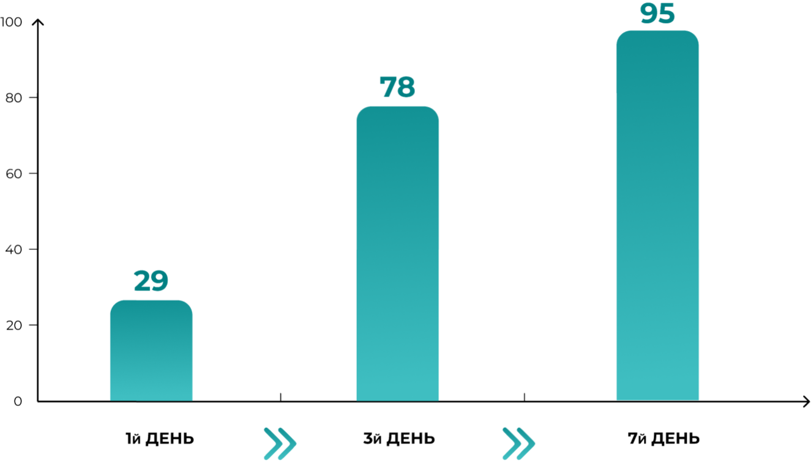

ЕРГОФЕРОН
Терапевтичний ефект розвивається вже після 1-го дня лікування,у 1/3 пацієнтів нормалізується температура тіла, згідно
результатам дослідження «Ермітаж»: 8 411 пацієнтів.
ЧАСТКА ПАЦІЄНТІВ З НОРМАЛЬНОЮ t° ТІЛА (≤ 37,0O °С) НА ТЛІ ЛІКУВАННЯ

ЕМіжнародна наглядова
програма «ЕРМІТАЖ»
8411
Пацієнтів з клінічними
проявами ГРВІ та/або грипу, незалежно від термінів початку захворювання
програма «ЕРМІТАЖ»
8411
Пацієнтів з клінічними
проявами ГРВІ та/або грипу, незалежно від термінів початку захворювання